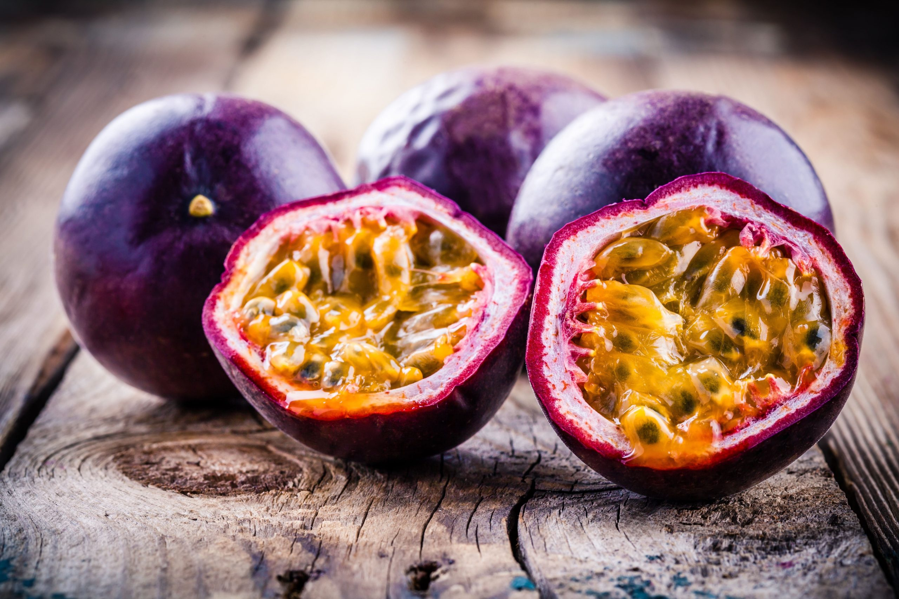
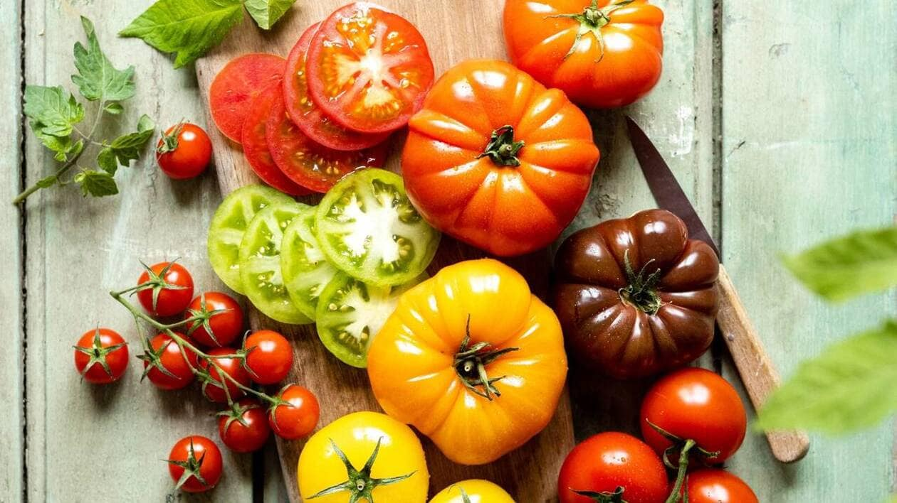

Fruits
Le fruit de la passion est le fruit de certaines plantes à fleurs du genre Passiflora dont en particulier Passiflora edulis (la grenadille).
Le fruit de la passion est ainsi appelé parce qu'il provient de l'une des nombreuses espèces de fleur de la passion (en latin Passiflora).
Vers 1700, le nom a été donné par des missionnaires au Brésil comme aide pédagogique tout en essayant de convertir les habitants indigènes au christianisme ; son nom était flor das cinco chagas ou « fleur des cinq plaies » pour illustrer la Crucifixion du Christ et sa Résurrection, avec d'autres composants végétaux également nommés d'après un emblème de la Passion de Jésuss.
Le prix et de 8,50€ pour le kilos en France métropolitainne.

Légumes
La tomate (Solanum lycopersicum L.) est une espèce de plantes herbacées du genre Solanum de la famille des Solanacées, originaire du Mexique. Le terme désigne aussi son fruit charnu : la tomate se consomme comme un légume-fruit, crue ou cuite ; elle est devenue un élément incontournable de la gastronomie dans de nombreux pays, particulièrement dans les Amériques.
L'espèce compte quelques variétés botaniques, dont la « tomate cerise » et plusieurs milliers de variétés cultivées (cultivars identifiés par des appellations ou des marques commerciales).
La plante est cultivée en plein champ ou sous abri par les agriculteurs et les horticulteurs sous presque toutes les latitudes, sur une superficie de plus de quatre millions d'hectares. En volume, elle est le fruit le plus cultivé dans le monde. La tomate a donné lieu au développement d'une importante industrie de transformation, pour la fabrication de concentré, de sauce tomate, notamment de sauce ketchup, de jus de légumes et de conserves.
le prix au kilos varie entre 5,32€ et 6,63€ en France métropolitainne.
